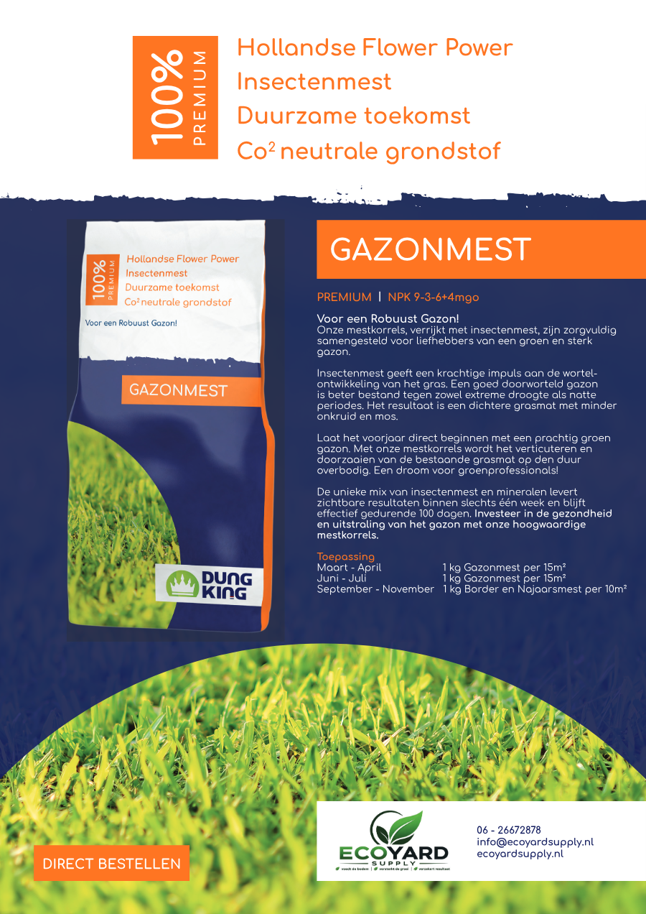
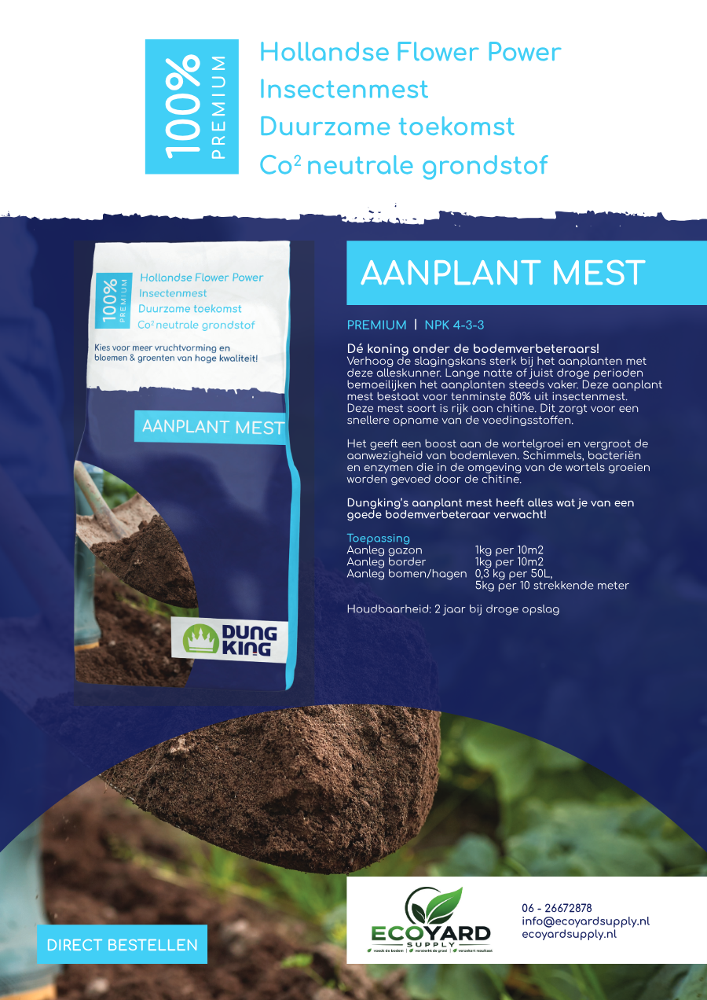

Eco Yard Supply
Duurzame voeding voor een gezonde tuin
Actief in Noord-Brabant
Ecologische meststoffen en bodemadvies voor hoveniers en particuliere tuinliefhebbers in Noord-Brabant.
Met insectenmest van Dungking kiest Eco Yard Supply voor een krachtige, natuurlijke bodemverbeteraar die de bodem voedt, de groei versterkt en helpt resultaat te behalen.

97%
ecologisch
kenmerk van Dungking insectenmest
Noord-Brabant
lokaal advies en levering
Versterkt de groei
Verzekert resultaat
Over Eco Yard Supply
Persoonlijk advies voor duurzame tuingroei
Eco Yard Supply helpt hoveniers en particuliere tuinliefhebbers met duurzame producten voor bodem, gazon en aanplant in Noord-Brabant. We denken mee, geven advies op maat en leveren producten die passen bij een gezonde, toekomstbestendige tuin.
Of het nu gaat om professioneel gebruik in groenprojecten of om een particuliere tuin: Eco Yard Supply kijkt graag mee naar een passende oplossing.
Waar we op sturen
- Advies op maat voor bodem, gazon en aanplant
- Duurzame productkeuze met praktische toepassing
- Voor professional en particulier in Noord-Brabant bereikbaar
Producten
Dungking meststoffen voor elke groeifase
De flyers zijn uitgewerkt naar praktische productpagina's met toepassing, dosering en directe contactmogelijkheden voor bestelling of advies.

Dungking Startersmest
Voor gazons en borders in het vroege voorjaar, wanneer planten een extra zetje kunnen gebruiken. Zichtbaar resultaat binnen 1 week en effectief tot 60 dagen.
Lees meer
Dungking Gazonmest
Voor een robuust en dieper geworteld gazon dat beter bestand is tegen droogte, natte perioden, mos en onkruid.
Lees meer
Dungking Bordermest + Najaarsmest
Voor groei, bloei en winterweerbaarheid van borders, bloeiende planten, heesters, bomen, rozen en gazons in zomer en najaar.
Lees meer
Dungking Aanplantmest
Bodemverbeteraar met ten minste 80% insectenmest voor meer bodemleven, sterke wortelgroei en een hogere slagingskans bij aanplant.
Lees meerVoor hoveniers
Voor hoveniers die duurzaam resultaat willen leveren
Eco Yard Supply richt zich in het bijzonder op hoveniers die hun klanten een duurzame en effectieve oplossing willen bieden. We denken graag mee over toepassing, productkeuze en praktische inzet in tuinen en groenprojecten in Noord-Brabant.
- Advies op maat
- Geschikt voor professioneel gebruik
- Duurzame productkeuze
- Praktisch toepasbaar in tuinen en groenprojecten
- Ook toegankelijk voor particuliere klanten
Veelgestelde vragen
Praktische informatie over advies, bezoek en levering
Waar is Eco Yard Supply actief?
Eco Yard Supply is actief in Noord-Brabant en levert duurzaam tuinadvies en Dungking meststoffen vanuit Landhorst.
Kan ik langskomen bij Eco Yard Supply?
Een bezoek is alleen mogelijk op afspraak. Neem vooraf contact op of bel om een geschikt moment af te spreken.
Wanneer is Eco Yard Supply bereikbaar?
We zijn bereikbaar op doordeweekse dagen van 08:00 tot 20:00 en op zaterdag van 09:00 tot 17:00.
Voor wie zijn de Dungking producten geschikt?
De producten zijn geschikt voor hoveniers, groenprofessionals en particuliere tuinliefhebbers die de bodem, gazons, borders of nieuwe aanplant duurzaam willen ondersteunen.
Contact
Klaar om je bodem duurzaam te voeden?
Neem contact op voor advies, productinformatie of beschikbaarheid. Bezoek is alleen mogelijk op afspraak; bel of mail vooraf om een moment in te plannen.
- Adres
- Tweede Stichting 9
5445 NZ Landhorst - info@ecoyardsupply.nl
- Telefoon
- +31 6 26672878
- Regio
- Noord-Brabant
- Bezoek
- Alleen op afspraak
- Bereikbaar
- Maandag t/m vrijdag 08:00 - 20:00
Zaterdag 09:00 - 17:00